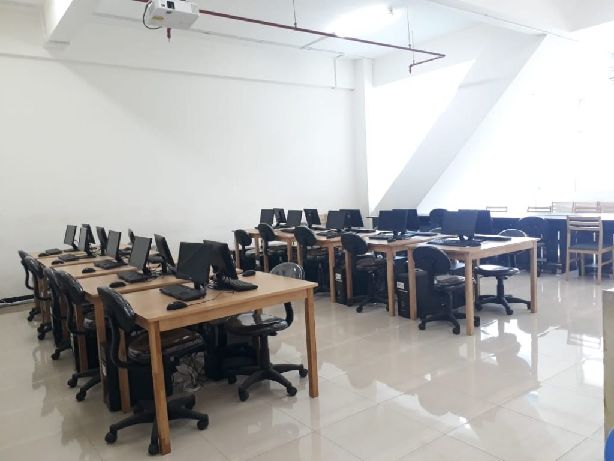
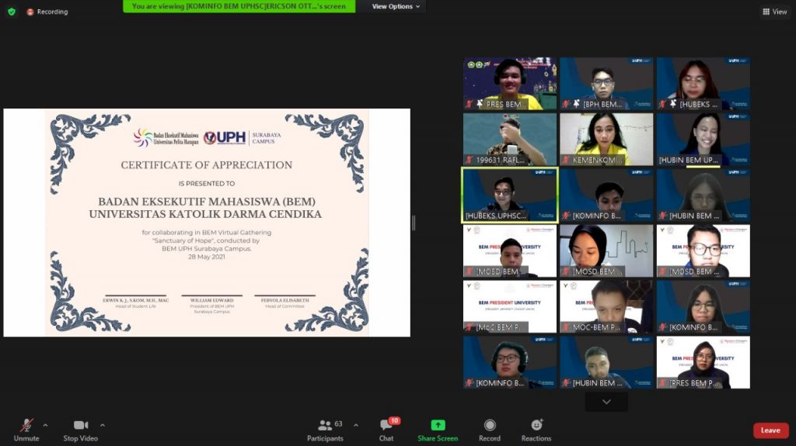

|  |

|
|
FASILITAS
UKDC memiliki beragam fasilitas fisik seperti Perpustakaan dan Laboratorium untuk menunjang kegiatan perkuliahan, Gedung Olahraga, Kantin, serta Internet di lingkungan kampus. |
BEASISWA
Universitas Katolik Darma Cendika menyediakan beberapa beasiswa yang terbagi ke dalam 2 kategori, yakni kategori mahasiswa baru dan mahasiswa yang telah melaksanakan studi di UKDC. Beasiswa yang disediakan oleh UKDC... |
KERJASAMA
Berdasarkan ruang lingkupnya, jalur kerjasama UKDC terbagi menjadi 3 bidang, yakni bidang pendidikan, penelitian, dan pengabdian masyarakat. Manfaat dari kerjasama untuk UKDC... |
Selengkapnya |
Selengkapnya |
Selengkapnya |
|  | ||
130 Peserta Ikuti Webinar Tips Pembuatan CV dan Interview yang Diselenggarakan oleh BEM UKDCBaca Selengkapnya |
Mahasiswa, Ini 3 Tips Jago Public Speaking yang Baik Untuk PemulaBaca Selengkapnya |
BEM UKDC Hadiri BEM Virtual Gathering yang Diselenggarakan oleh BEM UPHSCBaca Selengkapnya |
Fakultas
3 |
Program Studi
7 |
Pengajar
57+ |
Mahasiswa
821+ |